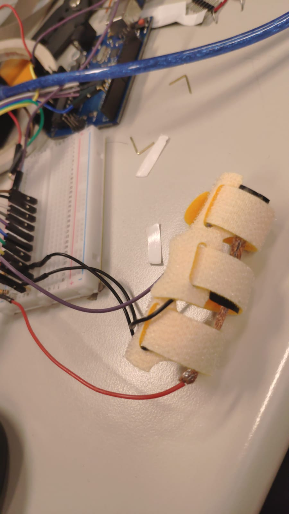
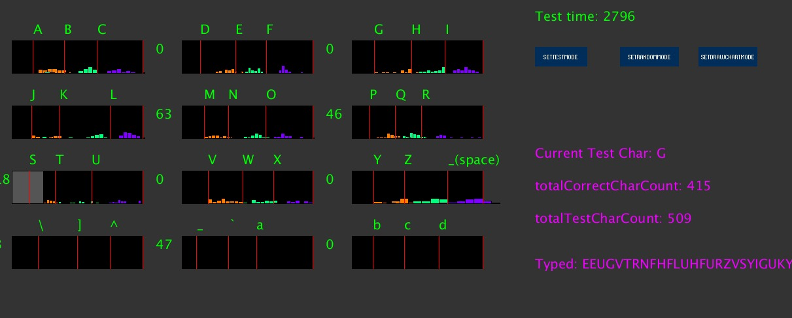

Research Associate
Hochschule Luzern – Informatik
HSLU
Curriculum Vitae (PDF)
Last Updated: February, 2026
Office: Room S12.018
Campus Zug-Rotkreuz
Suurstoffi 1, 6343 Rotkreuz
Contact: kityung.lam<at>hslu.ch
James KY Lam (Kit Yung Lam) is a Research Associate (Wissenschaftlicher Mitarbeiter) at Hochschule Luzern – Informatik, Switzerland. He received his PhD in the Interdisciplinary Programs Office at HKUST, where he was advised by Prof. Pan HUI as a member of the SyMLab. He earned his B.Sc. from the School of Creative Media, City University of Hong Kong.
His research focuses on Extended Reality (XR), Augmented Reality, Volumetric Video, Human-Computer Interaction, and AI-based 3D Reconstruction. At HSLU, he works on cutting-edge research projects spanning holographic communication, immersive AI avatars, and volumetric video technologies for applications in museums, education, and industry.
His research interests also include Fintech and IoT.
Personal Projects:
AI mobile projector that allow the environment to be the UICurrent and recent research projects at Hochschule Luzern:
Full list on Google Scholar
[c.17] A Fast Volumetric Capture and Reconstruction Pipeline for Dynamic Point Clouds and Gaussian Splats 2025
[c.16] Affordable Workflows for Volumetric Video Applications in XR to Enhance Museum Experiences 2024
[c.14] A Volumetric Video Application to Enhance Museum Experiences 2024 · Cited by 1
[c.13] VVGLTF: Efficient Streaming of Volumetric Video with glTF 2023 · Cited by 2
[c.12] Real-Time WebXR Edge-based Object Detection for AR 2023 · Cited by 2
[c.11]
Human-Avatar Interaction in Metaverse: Framework for Full-Body Interaction
Kit Yung Lam et al.
2023 · Cited by 56
[c.10]
3DeformR: Freehand 3D Model Editing in Virtual Environments Considering Head Movements on Mobile Headsets
Kit Yung Lam et al.
2022 · Cited by 8
[c.9]
Mobile Augmented Reality: User Interfaces, Frameworks, and Intelligence
Jacky Cao, Kit-Yung Lam, Lik-Hang Lee, Xiaoli Liu, Pan Hui, Xiang Su
ACM Computing Survey (CSUR) · Cited by 212
[c.8]
A2W: Context-Aware Recommendation System for Mobile Augmented Reality Web Browser
Kit-Yung Lam*, Lik-Hang Lee*, and Pan Hui (*co-first author)
ACM Multimedia 2021 (MM'2021), Chengdu, China · Cited by 51
[c.7]
From Seen to Unseen: Designing Keyboard-less Interfaces for Text Entry on Constrained Screen Real Estate of
Augmented Reality Headsets
Lik-Hang Lee, Kit-Yung Lam, Yui-Pan Yau, Tristan Braud, and Pan Hui
Journal of Pervasive and Mobile Computing · Cited by 24
[c.6]
MyoKey: Surface Electromyography and Inertial Motion Sensing-based Text Entry in AR
Y. Kwon, Kirill Shatilov, Lik-Hang Lee, Serkan Kumyol, Kit-Yung Lam, Yui-Pan Yau, and Pan Hui
IEEE PerCom 2020, Texas, USA [Work-in-Progress Paper] · Cited by 18
[c.5]
Quadmetric Optimized Thumb-to-Finger Interaction for Force Assisted One-Handed Text Entry on Mobile
Headsets
Lik Hang Lee, Kit Yung Lam, Tong Li, Tristan Braud, Xiang Su, and Pan Hui
UbiCOMP 2019 · Cited by 46
[c.4] M2A: A Framework for Visualizing Information from Mobile Web to
Mobile Augmented Reality
Kit Yung Lam, Lik Hang Lee, Tristan Braud, and Pan Hui
Idea video
PerCom 2019 · Cited by 36
[c.3] HIBEY: Hide the Keyboard in Augmented Reality
Lik Hang Lee, Kit Yung Lam, Yui Pan Yau, Tristan Braud, and Pan Hui
Prototype demonstration
PerCom 2019 · Cited by 63
[c.2] 3D Fog Display Using Parallel
Linear Motion Platforms
Miu-Ling Lam, Bin Chen, Kit-Yung Lam, Yaozhun Huang
2014 International Conference on Virtual Systems & Multimedia (VSMM) · Cited by
13
[c.1] Path Planning as a Service PPaaS:
Cloud-based Robotic Path Planning
Miu-Ling Lam, Kit-Yung Lam
2014 IEEE International Conference on Robotics and Biomimetics (ROBIO 2014) · Cited
by 46
Pressure-Sensitive Force-Touch keyboard:

Arduino connecting the A pressure sensor array, use the force touch date of each sensor as keyboard press event.

Design details (5 layers design) :
Velcro (loop)
Conductive fibric
+ conductive wire connect to +5V power supply in arduino
Velostat Pressure-Sensitive Conductive Sheet
- conductive wire connect to signal pin in Arduino
Conductive fibric
Velcro (Hook)